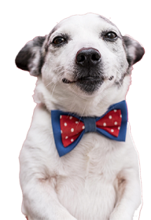
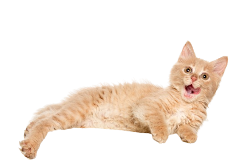

Já pensou em apadrinhar um pet?
Gosta de ter um animal, mas não tem espaço em casa? Sente vontade de garantir o alojamento e alimentação de um animal sem dono, proporcionando-lhe segurança e conforto? Então talvez possa ser a madrinha ou o padrinho de um pet.

